|
Zuse Z3 - 1941 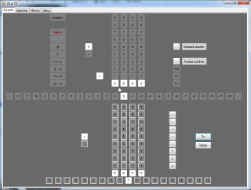 |
Eniac - February 1946 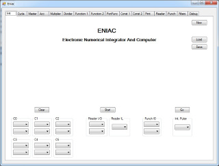 |
|
SSEM - June 1948 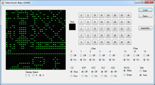 |
EDSAC - May 1949 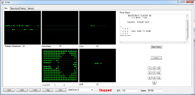 |
|
UNIVAC I - March 1951 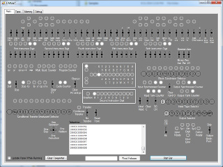 |
PDP I - 1959 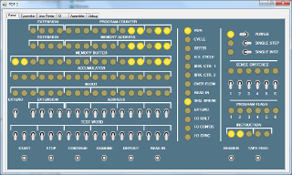 |
|
AGC - August 1966 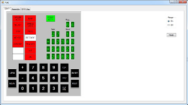 |
Kenbak-1 - 1970 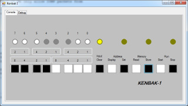 |
|
Kim I - 1975 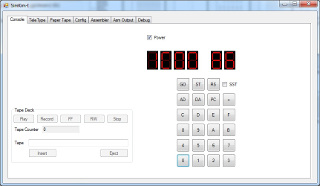 |
Although these next few do not really fall under the category of computers, many people, including me, got their start with computers with devices like these.
|
CARDIAC 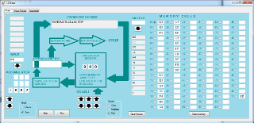 |
Digi-Comp I 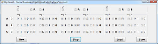 |
|
JR-01 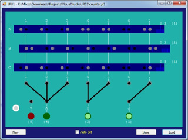 |
|
SSEM - June 1948 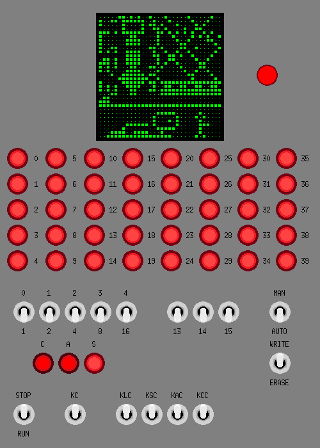 |
EDSAC - May 1949 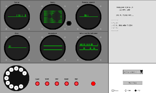 |
|
Kenbak-1 - 1970 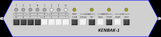 |
Download the Digi-Comp I emulator
JR-01